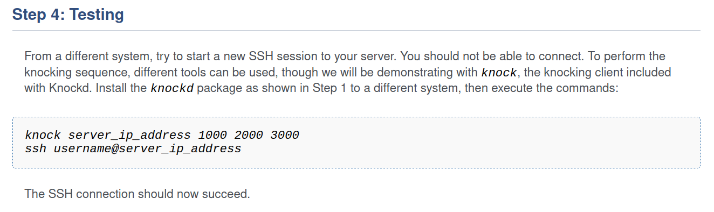
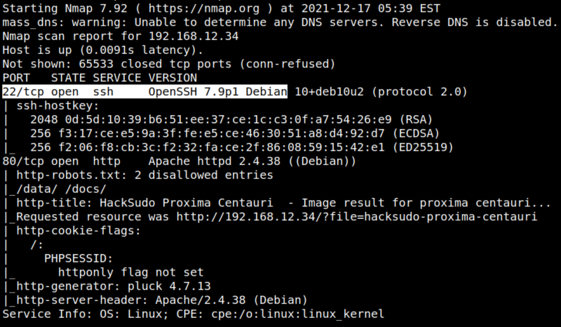

3.2 Port Knocking Sequence
Port knocking is a method of dynamically opening network ports by "knocking" (i.e. connecting) on a predefined sequence of ports. This is especially useful for obscuring an open network port from port scanning since the port in question will be closed unless the port knocking sequence is executed. A long enough port knocking sequence is practically impossible to brute force: for example, to successfully guess (by brute force) a combination of 3 TCP ports, an attacker would have to try knocking on each of the 281 trillion possible combinations, and scan for open ports after each port knocking sequence. As you can probably imagine, this would take a very, very long time.

From https://www.howtoforge.com/how-to-obscure-network-ports-with-a-port-knocking-sequence-on-debian-10/#step-testing.
1. On the previous section we got the following informatio.
1) RA for open.
2) Numbers to unlock filtered ports 14 29 43
2. Run the following on your Kali Machine to open port 22. Maybe you have to install “knock”)
$knock 192.168.12.34 14 29 43
$nmap -T4 -sC -sV -p- --min-rate=1000 192.168.12.34
$nmap -T4 -sC -sV -p- --min-rate=1000 192.168.12.34
Output:

Now you have the port 22 opened.